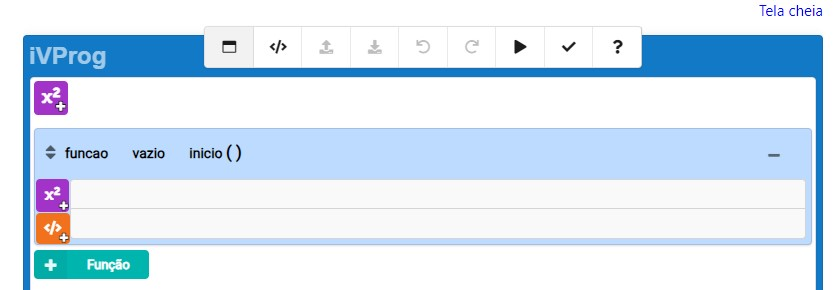
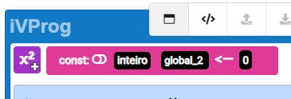
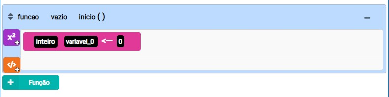
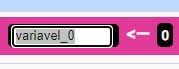
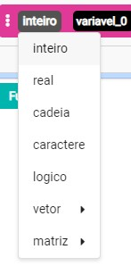

Introdução ao iVProg
O iVProgH é um sistema educacional de código aberto, desenvolvido em HTML5 (HTML+CSS+JavaScript), voltado para o ensino e aprendizado de algoritmos e programação. Projetado com base em um modelo visual, pode ser utilizado em todo ciclo escolar e em diversas áreas da matemática
- Permite o uso de exercícios com avaliação automática.
- Integração com o ambiente Moodle para facilitar o ensino.
Início Rápido
Aqui estão algumas orientações para começar a programar no iVProg:
- Escolha um projeto simples para iniciar.
- Utilize a documentação online para obter suporte.
Lembre-se, a prática leva à excelência. Continue programando para aprimorar suas habilidades ao longo do tempo.
Interface do iVProg
A imagem abaixo ilustra a interface inicial do iVProg
A interface inclui uma seção global para declarar variáveis globais no início do programa.
Logo abaixo, no bloco azul claro, encontra-se uma função já iniciada.
Se necessário, é possível adicionar mais de uma função ao projeto clicando no botão verde claro.
Entendendo Variáveis
Em qualquer ambiente de programação, as variáveis desempenham um papel crucial ao armazenar valores utilizados no código. Imagine criar um programa sem saber quais valores serão inseridos. Nesse caso, é necessário reservar um espaço especial, representado por uma variável, para armazenar esses valores.
1.1 Criando Variáveis no iVProgH
No iVProgH, criar uma nova variável é simples. Basta usar o botão "Criar Variável". Na primeira vez, uma nova variável será criada.
É possível alterar o nome da variável:
Também é possível modificar o tipo da variável:
Além disso, é possível criar um vetor/lista para armazenar vários dados em uma única variável.
Comandos
Os comandos representam ações executadas sequencialmente pelo programa até a conclusão. Alguns comandos essenciais incluem:
1.1 Comando de "Atribuição"
Usado para atribuir um valor a uma variável, podendo ser um número, uma string ou outra variável.
1.2 Comando de "Entrada/Leitura de Dados"
Utilizado para ler um valor do teclado e atribuí-lo a uma variável.
1.3 Comando de "Saída/Escrita de Dados"
Empregado para exibir um valor na tela.
1.5 Comando de "Chamada de Função"
Utilizado para executar uma função.
1.5 Comando de Condição - "Se verdadeiro então"
Aplicado para executar um bloco de código somente se uma condição for verdadeira.
1.6 Comandos de Repetição
Empregados para executar um bloco de código várias vezes, incluindo:
1.6.1 Repetir N vezes
Executa um bloco de código um número específico de vezes.
1.6.2 Enquanto verdadeiro
Executa um bloco de código enquanto uma condição for verdadeira.
1.6.3 Repetir até que verdadeiro
Executa um bloco de código até que uma condição seja verdadeira.
1.7 Comando de Comentário
Utilizado para adicionar comentários ao código, sendo ignorados pelo compilador.